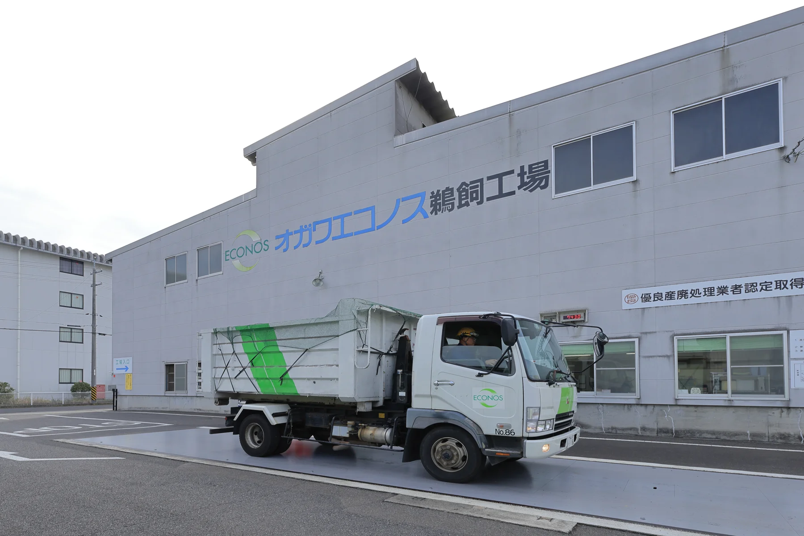

現在の事業
水処理、収集運搬、資源化、固形燃料製造。地域の暮らしと産業を支える。
OUR VISION / 私たちの未来
水と資源の循環で、人と地球の未来をつくる。
府中から、宇宙へ。
その出発点は、今日の現場です。
地域の水を守る。暮らしから出るものを適切に扱う。産業で生まれた資源に、次の使い道をつくる。オガワエコノスの仕事は、人の営みと自然の循環をつなぐことにあります。
府中・福山・尾道で培った経験を起点に、全国での事業や企業間の連携へ。その先に、国境を越えた協働や、新しい環境での資源循環の可能性を見据えています。
人の幸せも、地球の美しさも、ともに大切にする。その思いを、毎日の仕事と次の挑戦につなげていきます。

経験を持ち寄り、
その地域に合う循環をつくる。
公表されている「100億宣言」では、ベトナムでの事業創出とASEANへの展開が掲げられています。
大切なのは、現地の暮らしや産業への理解です。地域で培った水処理や資源化の経験を、現地企業・研究機関・地域の知恵とつなぎ、持続可能な事業の可能性を考えていきます。
海外事業の共創テーマへ ↗水も、食べものも、資源も。
限られた環境で、使い続けるために。
地上の経験から、新しい問いへ。
宇宙居住拠点で生まれる排水や有機性廃棄物から、水や栄養素を回収し、栽培に活用する。こうした循環の可能性を、研究機関や専門企業との協働を通じて探る構想です。
宇宙を見据えた研究の知見は、地上の省資源化や地域の水処理にもつながる可能性があります。遠い未来への問いを、今日の地域へ還元していきたいと考えています。
この内容は将来の研究構想です。宇宙での事業実績、実証済み技術、特定機関との提携を示すものではありません。
実績・方針・構想を明確にしながら、
新しい可能性を育てていく。
水処理、収集運搬、資源化、固形燃料製造。地域の暮らしと産業を支える。
企業間連携と海外展開。ベトナムでの事業創出を含む、新しい循環を考える。
閉鎖環境での水・有機資源の循環と、宇宙農業への応用可能性を探る。